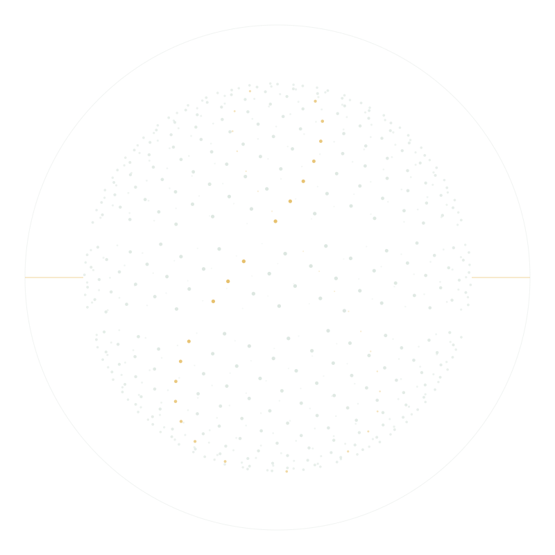

The details
make the difference.
Policies. Shipping information. Service hours. Build on the material your team already maintains.
SUPPORT INTELLIGENCE, WITH CONTEXT
Turn your business documentation into a focused support conversation. Built around what your team knows.
A working foundation for tailored client deployments.

QUESTION → CONTEXT → ANSWER01 / FROM SIGNAL TO CLARITY
Your documentation is the starting point.
The conversation is where it becomes useful.
THE SUPPORTGENIUS APPROACH
Select a step to explore the system.
Illustration, not live processing telemetry.
Approved policy and support documents form the context for a reply. The current foundation reads text and Markdown documents.
DOCUMENTS → RETRIEVALRelevant passages accompany the question to your configured language model. Retrieval supports the answer; it cannot guarantee accuracy.
CONTEXT → MODELA focused console keeps the question, response, and recovery controls together. Customer actions and source citations are not available in the current release.
REPLY → CONVERSATION02 / EXPERIENCE THE DIFFERENCE
Explore sample conversations.
All examples below are scripted illustrations.
No refunds, account updates,
or other actions are performed.
CUSTOMER QUESTION
What is your returns policy?
In this sample policy, you can return an unused item in its original packaging within 14 days of delivery.
Illustrative policy text. Open your deployed assistant to test its configured knowledge.
Open the reference console03 / BUILT AROUND YOUR BUSINESS
A practical foundation you can configure,
evaluate, and maintain.
Policies. Shipping information. Service hours. Build on the material your team already maintains.
Configure OpenAI, Gemini, or Ollama. Provider availability depends on your deployment.
Anonymous sessions, bounded requests, and explicit errors. No live customer actions in this release.
KNOWLEDGE, MADE CLEAR.
This page is a design reference. The reference console uses scripted examples.